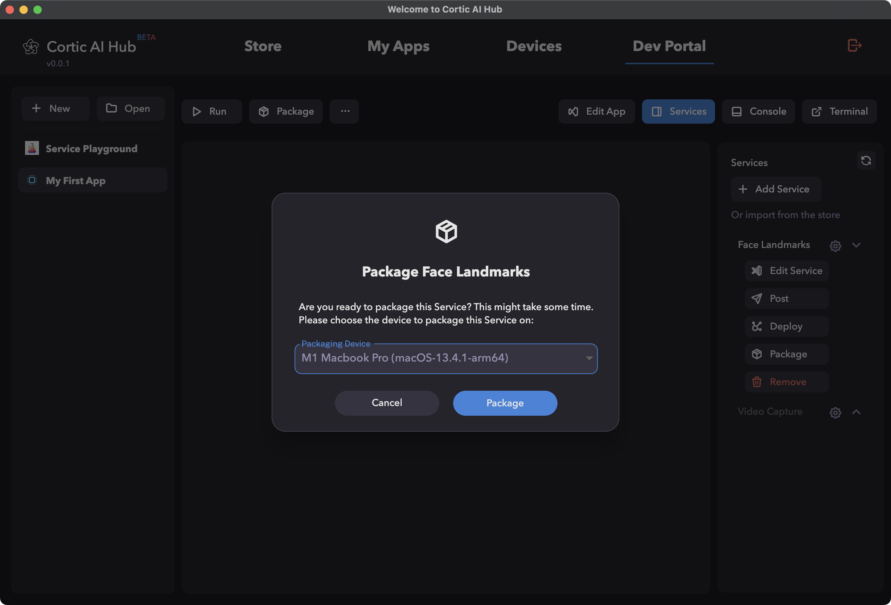
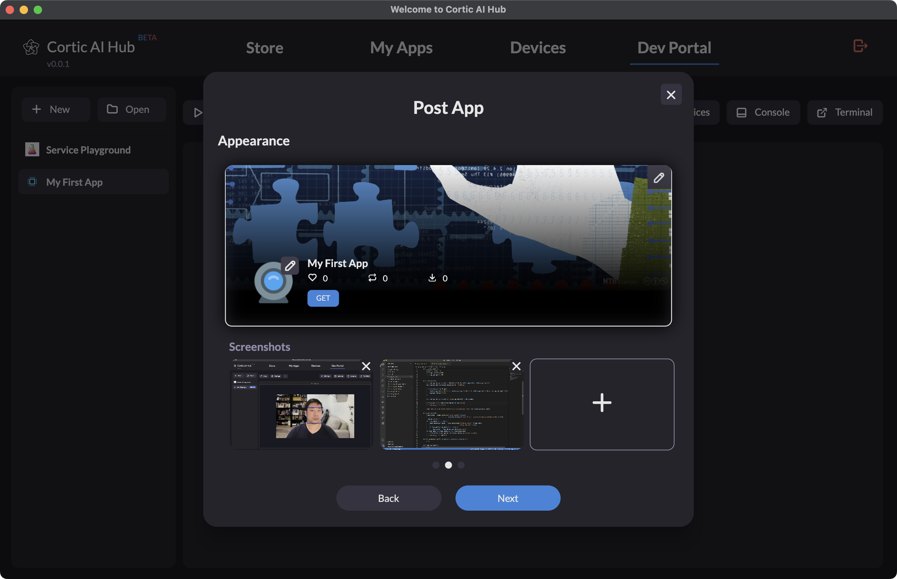

Publishing Your Apps and Services
Introduction
This guide is designed to help developers understand the process of packaging and making their apps and
services available on the Store for others to utilize. The guide elucidates the distinction between posting
and publishing, and provides a step-by-step procedure to post an app and a service.
Difference Between Posting and Publishing
Posting an app or service essentially means uploading the respective package to the cloud. However, it is
solely visible on the developer's profile page. Conversely, publishing an app or service entails making it
available on the Store, thereby enabling other users to download and utilize it. An app or service will
first need to be posted before it can be published.
Posting a Service
To post your service, adhere to the steps mentioned below:
- Navigate to the 'Dev Portal' tab on the Cortic AI Hub.
- Activate the "Service" pane by clicking on the "Services" button on the top right.
- Click on the 'Package' option from the "Service" pane on the right hand side.
- Select a device in the popup dialog to create a Service package. Then click "Package".

- Once the Service is packaged. Click on the 'Post' option from the "Service" pane on the right hand side.
- Fill in the information for the Service and click 'Next'.
- Choose the Service package you intend to post and provide release note.
- Ensure you have filled out all mandatory fields and provided all necessary details for the Service.
- Click on 'Post' to finalize the posting.
Posting an App
Follow the steps below to post your app:
- Navigate to the 'Dev Portal' section on the Cortic AI Hub.
- Click on the 'Package' button.
- Select a device in the popup dialog to create an App package. Then click "Package".
- Once the App is packaged. Click on the 'Post' button.
- Fill in all the neessary information for the App and click "Next".

- Select the App package you wish to post and provide release note.
- Upon posting, the Cortic AI Hub will initiate an automatic check. It will verify if all services
utilized by the app are available in the Store. If any service is found missing from the Store, the app
will not be allowed to be posted. Ensure all necessary services are available before proceeding.
Publishing an App or Service
Once you've successfully posted your app or service, publishing it to the Store is the next step to make it
accessible for the wider audience. The steps for publishing differ slightly based on whether you're
publishing an app or a service. In both cases, you will need to navigate to the "Profile" section of the
Store on the Cortic AI Hub.
From the App Page:
- Locate the app you've posted and click on its name to access its details page.
- On the app's detail page, there will be a 'Publish' button. Click on this button.
From the Service Page:
- Find the service you've posted and click on its name to view its details page.
- On the service's detail page, locate the 'Publish' button and click on it.
Note: Publishing an app or service is a significant step. Ensure that your submissions are compliant with
the guidelines and policies of the Cortic Platform to avoid any complications.
Next Steps
After successfully posting your app or service, you might want to explore the following:
- Understand how to update your apps or services based on feedback or newer versions.
- Explore integrating third-party services or libraries to enhance your app's functionalities.